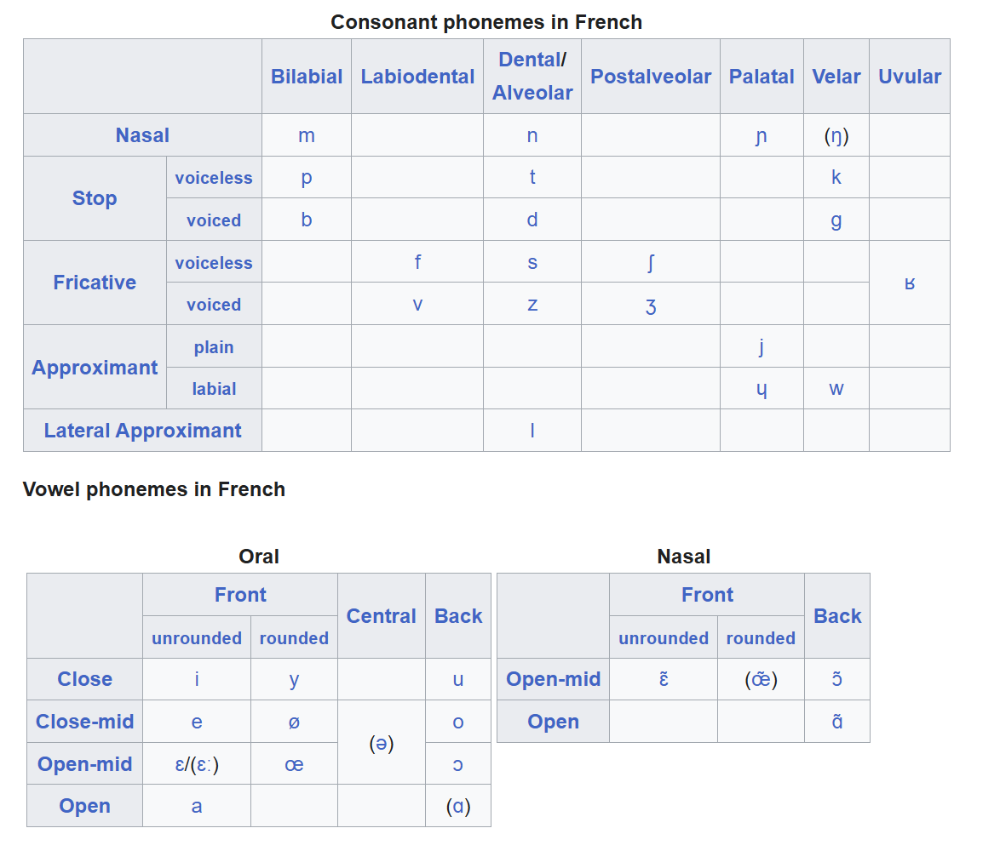

This is a series of blogs on linguistics. See also: Morphology and Semantics, Writing Systems, Phonetics and Phonology Part 1
The IPA Introduction
The International Phonetic Alphabet, or the IPA, is how sound are represented. Each letter is consistent and makes the same sound all the time, because they are defined using the specific terms we talked about in the Phonetics blog.. We will get into the specific characters of the IPA in the next part, but for now, we’re just going to be talking about the different ways that linguists represent sounds. To fully understand how some of the examples in this post are pronounced, you might want to check out the IPA chart.
You may have noticed that throughout the last article I’ve used slashes and brackets to refer to sounds. That was not just something random I did because a monkey walked on my keyboard one time and then I stuck with it - this is actually the notation of referencing IPA sounds.
The Difference Between Slashes and Brackets
Why did I use both [] and //? In short, [] is the actual scientific way of making as many distinctions as you want (phonetic transcription), so it doesn’t care about how specific languages perceive sounds. On the other hand, // is when you only care about the distinctions a specific language makes (phonemic transcription), so you’ll typically be less descriptive of how to pronounce that sound.
For example, Tamil doesn’t distinguish between voiced and voiceless consonants, so you could phonemically write the word for monkey as /kuɾaŋku/, even though phonetically, people actually pronounce it as something like [kuɾaŋɡʊ]. However, it doesn’t matter which of those distinctions are used, between [ʊ] and [u] or [k] and [g], since they’re perceived as being the same sound for Tamil speakers.
Allophonic Variation
Phonemes can have different forms, so a single phoneme is more of a category. In the example for “monkey” in Tamil, the phoneme /k/ can mean [k] or [g] depending on the specific word. So, we’d say that the voicing of /k/ is NOT phonemic in Tamil - variations aren’t distinguished in meaning. [k] and [g] are considered allophones - different forms of the same phoneme.
You can write allophones by describing when a certain phoneme varies in a certain environment. So, we get to use nerdy linguistics notation! For example, in Tamil, /k/ is pronounced as [g] after a nasal sound, so we can write /k/ → [g] / [ŋ]__. The underscore represents the position of this phoneme, and the slash indicates that the environment of this variation is about to come next.
A more tangible example of allophonic variationis tonality in English. As you (hopefully) know, English is not a tonal language. So, when someone speaks English with tones (for example, Steven’s dad in a Steven He video), it means the same thing as speaking normal English without any tones. However, Mandarin is a tonal language, so if you say “ma” with a high tone, it means “mother”, but if you say “ma” with a falling tone, it means “scold”. So, the tones in Mandarin are phonemic, while the tones in English are allophonic.
Intuition for Phonemes
Does this whole idea of languages perceiving sounds feel kind of weird? It might be, because it is mainly subconscious, and also feels more like psychology than linguistics. However, let me show you why talking about phonemes is actually necessary.
The concept of phonemes can be boiled down to distinguishing between sounds. From the phonetics blog, you might remember that that are a BUNCH of different features that can be present in sounds. There’s not just place and manner of articulation, but also voice, gemination, nasality, and more.
Imagine that there was no such notion of distinguishing between those different features. Then, you would have a BUNCH of different sounds that all sound basically the same to you, based on every single combination of these features. Even if the features are just binary, which is the smallest amount of distinction in a feature, they would still grow exponentially, so 20 features would already give you over a million different sounds that you can’t distinguish between. Theoretically, you could even have tiny, continuous distinctions, like the amount of time pronouncing a vowel. Then, you would have to deal with an infinite amount of different sounds. So, all languages have a system of distinguishing sounds into phonemes.
Minimal Pairs
So, how do you know if a language distinguishes between two sounds? The main, most reliable way is to find minimal pairs. A minimal pair is two words that mean different things whose pronounciations differ by only one sound at the same, corresponding positions. For example, in English, “bag” and “back” ([bæg] and [bæk]) are a minimal pair, since they have different meanings and the only difference in their pronounciation is the [g] and [k], which means they are two different phonemes, /k/ and /g/. Typically, even one minimal pair suffices to show that two sounds are perceived as different phonemes, but more examples could help to provide further evidence.
Weird Example of Telugu with Sanskrit loanwords
Telugu is the most widely spoken Dravidian language. It has a lot of Sanskrit loanwords. In Sanskrit, [k], [g], [kʰ], and [gʰ] are all their own phonemes, but in native Dravidian vocabulary, they are allophones of the same phoneme /k/.
As a result, there are two layers of phonology in Telugu. The vocabulary that is from before the Sanskrit loanwords contains no minimal pairs that distinguish across aspiration or voicing, while the Sanskrit loanwords do contain such minimal pairs.
Fun fact: This is one reason why the Telugu script’s letters for voicing and aspiration are so much easier than Devanagari’s. Initially, the Telugu script only had one letter for all these sounds ( క ), like the Tamil ( க ). After borrowing the Sanskrit loanwords, they just added diacritics to that letter to represent those distinctions.
As a bonus fun fact, the reason why representing those Sanskrit loanwords was so important is because a lot of them were words that represented concepts that weren’t present in Telugu before, like a lot of Hindu ideas, and written text typically was about religious topics, so it was important not to cause any misunderstandings.
Representation of features as vectors
While you can describe the pronounciation of a phoneme using the IPA, a more helpful way is to describe that symbol with a vector of features, but only the features that are distinguished in a certain language. For example, in English, the phoneme /p/ might be represented as [+bilabial, +stop, -voice], while /b/ might be [+bilabial, +stop, +voice].
Example in Korean for how tones might develop
Lots of times, losing distinguishing features causes ambiguity, and new features naturally arise to resolve that ambiguity. One can observe this happening in Korean. Korean has a three-way distinction between /k/, /kʰ/, and /k͈/ (plain, aspirated, and tense). However, the younger generations of Korean speakers nowadays have a hard time distinguishing between the plain and tense phonemes, so their pronounciations start merging, and this results in a lot of homophones, which may create confusion. Younger speakers have been observed to use differences in pitch to fill in this gap in information. Over time, this could lead to the development of tones in future dialects of Korean. This is very similar to how tones developed in most Chinese languages, since Old Chinese actually was not tonal and had consonant clusters instead that simplified and converged over time and created ambiguity. This phenomenon is called tonogenesis, and is also currently happening in Afrikaans, which is spoken about 12,500 kilometers away.
French Example of Phonology
Each language has its phonology written, by placing the accurate symbols of all of its phonemes. For example, see the phonology of French. 
{kind=link}
Structure of Syllables and Phonotactics
Each language has its own rule system for how certain phonemes can be placed together into words and syllables. Most syllables cross-linguistically have some sort of nucleus (typically a vowel, but sometimes some sonorant consonants), an optional onset (consonants before the nucleus), and an optional coda (any consonants after the nucleus). The combination of the nucleus and the coda is called the rhyme, which is why in poems, you would call rhyming words anything where the phonemes after the onset match.
Languages can vary in how restrictive or permissive they are with their syllable structure, and this is called phonotactics. Phonotactics also determine how syllables may stack together in words. Hawaiian, for example, is very restrictive, since the most complicated syllable structure it allows is CV (consonant + vowel), while English is very permissive, since it allows syllables like CCCVCCCC, in the word “strengths” (/strɛŋkθs/).
This is why some languages like Wifi Password Language (unofficially known as Polish) have a bunch of consonant clusters that English speakers find despicable; its most complex syllable is way, way, way longer than “strengths”. Meanwhile, Spanish’s phonotactics are pretty restrictive compared to English, which is why “student” is “estudiante” in Spanish; a consonant cluster may not begin a word, so they add a vowel at the beginning.